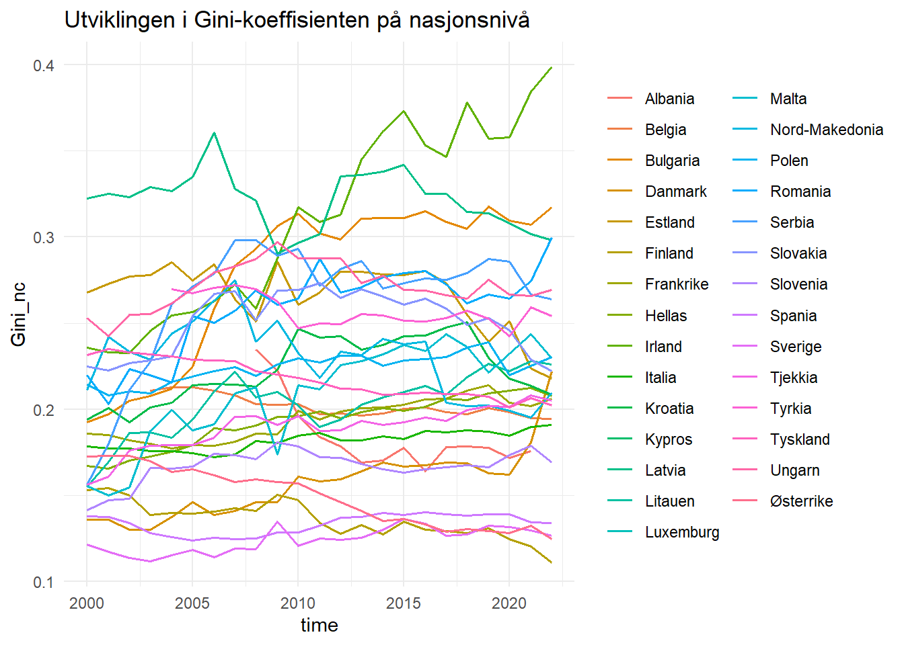

title | code |
|---|---|
Average annual population to calculate regional GDP data (thousand persons) by NUTS 3 region | nama_10r_3popgdp |
Gross domestic product (GDP) at current market prices by NUTS 3 region | nama_10r_3gdp |
Assignment 4:
Eu statistikk.
concept | code | name |
|---|---|---|
freq | A | Annual |
unit | MIO_EUR | Million euro |
unit | EUR_HAB | Euro per inhabitant |
unit | EUR_HAB_EU27_2020 | Euro per inhabitant in percentage of the EU27 (from 2020) average |
unit | MIO_NAC | Million units of national currency |
unit | MIO_PPS_EU27_2020 | Million purchasing power standards (PPS, EU27 from 2020) |
unit | PPS_EU27_2020_HAB | Purchasing power standard (PPS, EU27 from 2020), per inhabitant |
unit | PPS_HAB_EU27_2020 | Purchasing power standard (PPS, EU27 from 2020), per inhabitant in percentage of the EU27 (from 2020) average |
concept | code | name |
|---|---|---|
geo | EU27_2020 | European Union - 27 countries (from 2020) |
geo | BE | Belgium |
geo | BE1 | Région de Bruxelles-Capitale/Brussels Hoofdstedelijk Gewest |
geo | BE10 | Région de Bruxelles-Capitale/Brussels Hoofdstedelijk Gewest |
geo | BE100 | Arr. de Bruxelles-Capitale/Arr. Brussel-Hoofdstad |
geo | BE2 | Vlaams Gewest |
geo | BE21 | Prov. Antwerpen |
geo | BE211 | Arr. Antwerpen |
geo | BE212 | Arr. Mechelen |
geo | BE213 | Arr. Turnhout |
[1] 30058 3# A tibble: 30,058 x 3
geo time gdp_n3
<chr> <chr> <dbl>
1 AL011 2008 551130000
2 AL011 2009 582160000
3 AL011 2010 664070000
4 AL011 2011 631170000
5 AL011 2012 717600000
6 AL011 2013 696860000
7 AL011 2014 735600000
8 AL011 2015 788630000
9 AL011 2016 801980000
10 AL011 2017 800660000
# i 30,048 more rows# A tibble: 21 x 3
geo time gdp_n3
<chr> <chr> <dbl>
1 IE053 2000 15837300000
2 IE053 2001 17506250000
3 IE053 2002 19395440000
4 IE053 2003 19687190000
5 IE053 2004 21000450000
6 IE053 2005 21776750000
7 IE053 2006 24081640000
8 IE053 2007 26086890000
9 IE053 2008 22705550000
10 IE053 2009 24012370000
11 IE053 2010 24085200000
12 IE053 2011 26235110000
13 IE053 2012 24346250000
14 IE053 2013 23345250000
15 IE053 2014 25127580000
16 IE053 2018 73687140000
17 IE053 2019 71965850000
18 IE053 2020 75581570000
19 IE053 2021 99064470000
20 IE053 2022 122163400000
21 IE053 2023 103989840000# A tibble: 24 x 3
geo time gdp_n3
<chr> <chr> <dbl>
1 IE053 2000 15837300000
2 IE053 2001 17506250000
3 IE053 2002 19395440000
4 IE053 2003 19687190000
5 IE053 2004 21000450000
6 IE053 2005 21776750000
7 IE053 2006 24081640000
8 IE053 2007 26086890000
9 IE053 2008 22705550000
10 IE053 2009 24012370000
11 IE053 2010 24085200000
12 IE053 2011 26235110000
13 IE053 2012 24346250000
14 IE053 2013 23345250000
15 IE053 2014 25127580000
16 IE053 2015 37267470000
17 IE053 2016 49407360000
18 IE053 2017 61547250000
19 IE053 2018 73687140000
20 IE053 2019 71965850000
21 IE053 2020 75581570000
22 IE053 2021 99064470000
23 IE053 2022 122163400000
24 IE053 2023 103989840000Population demo_r_pjanaggr3
Oppgave 1
Søk i toc_txt for tabeller med population og NUTS 3. Pass på at dere dekker både population og Population og ulike skrivemåter for NUTS 3.
title | code |
|---|---|
Population density by NUTS 3 region | demo_r_d3dens |
Population on 1 January by age group, sex and NUTS 3 region | demo_r_pjangrp3 |
Population on 1 January by broad age group, sex and NUTS 3 region | demo_r_pjanaggr3 |
Population structure indicators by NUTS 3 region | demo_r_pjanind3 |
Population change - Demographic balance and crude rates at regional level (NUTS 3)Â | demo_r_gind3 |
Population by single year of age and NUTS 3 region | cens_11ag_r3 |
Population by marital status and NUTS 3 region | cens_11ms_r3 |
Population by family status and NUTS 3 region | cens_11fs_r3 |
Population by sex, citizenship and NUTS 3 region | cens_01rsctz |
Population by sex, age group, current activity status and NUTS 3 region | cens_01rapop |
Total and active population by sex, age, employment status, residence one year prior to the census and NUTS 3 region | cens_01ramigr |
Population by sex, age group, educational attainment level, current activity status and NUTS 3 region | cens_01rews |
Population by sex, age group, household status and NUTS 3 region | cens_01rhtype |
Population by sex, age group, size of household and NUTS 3 region | cens_01rhsize |
Average annual population to calculate regional GDP data (thousand persons) by NUTS 3 region | nama_10r_3popgdp |
Population by country of citizenship, age groups and NUTS 3 region | cens_21ctz_r3 |
Population by country of citizenship, age groups, family status and NUTS 3 region | cens_21ctzf_r3 |
Population by country of citizenship, age groups, type of housing arrangements and NUTS 3 region | cens_21ctzha_r3 |
Population by country of birth, age groups and NUTS 3 region | cens_21cob_r3 |
Population by country of birth, age groups, household status and NUTS 3 region | cens_21cobhs_r3 |
Population by country of birth, age groups, type of housing arrangements and NUTS 3 region | cens_21cobha_r3 |
Population by marital status, broad age groups and NUTS 3 region | cens_21m_r3 |
Population by family status, broad age groups and NUTS 3 region | cens_21f_r3 |
Population by size of the locality, age groups and NUTS 3 region | cens_21l_r3 |
Population by size of the locality, housing arrangements and NUTS 3 region | cens_21lha_r3 |
Population by year of arrival in the country since 2010, age groups, groups of country of birth and NUTS 3 region | cens_21argc_r3 |
Population by year of arrival in the country, age groups, family status and NUTS 3 region | cens_21arf_r3 |
Population with Ukrainian citizenship by 5-year age group and NUTS 3 region | cens_21ua_a5r3 |
Population with Ukrainian citizenship by age and NUTS 3 region | cens_21ua_ar3 |
Population with Ukrainian citizenship by 5-year age group, marital status and NUTS 3 region | cens_21ua_msr3 |
Population on 1st January by age, sex, type of projection and NUTS 3 region | proj_19rp3 |
Oppgave 2
- Finn koden for tabellen med forklarende tekst «Average annual population to calculate regional GDP data (thousand persons) by NUTS 3 regions».
title
<char>
1: Average annual population to calculate regional GDP data (thousand persons) by NUTS 3 region
code
<char>
1: nama_10r_3popgdp- Last ned Data Structure Definition (DSD) for denne tabellen.
concept | code | name |
|---|---|---|
freq | A | Annual |
unit | THS | Thousand |
geo | EU27_2020 | European Union - 27 countries (from 2020) |
geo | BE | Belgium |
geo | BE1 | Région de Bruxelles-Capitale/Brussels Hoofdstedelijk Gewest |
geo | BE10 | Région de Bruxelles-Capitale/Brussels Hoofdstedelijk Gewest |
geo | BE100 | Arr. de Bruxelles-Capitale/Arr. Brussel-Hoofdstad |
geo | BE2 | Vlaams Gewest |
geo | BE21 | Prov. Antwerpen |
geo | BE211 | Arr. Antwerpen |
- Bruk opplysningene i DSD for å formulere en spørring mot Eurostat og last ned dataene. Gi dataene lastet ned navnet pop. Vi er bare interessert i totalbefolkning og ignorerer derfor både kjønn og alder. Vi ønsker data for årene 2000-2023.
[1] 30038 3# A tibble: 30,038 x 3
geo time pop_n3
<chr> <chr> <dbl>
1 AL011 2001 186720
2 AL011 2002 182380
3 AL011 2003 178710
4 AL011 2004 174710
5 AL011 2005 170370
6 AL011 2006 165610
7 AL011 2007 160540
8 AL011 2008 155390
9 AL011 2009 150430
10 AL011 2010 146140
# i 30,028 more rowsOppgave 3
Gjør en left_join() av de to tabellene. La gdp være venstre tabell (Viktig!). Gi resultatet navnet gdp_pop.
[1] 27584 5[1] 0 5Var ikke noe mer NA-verdier igjen i gdp_pc_n3 Kvitter oss med andre objekter for å rydde litt ettersom vi bare skal bruke eu_data videre:
Oppgave 4
Endre navnet på variabelen geo til n3 og lag variablene n2 (NUTS2), n1 (NUTS1) og nc (for «Country») fra variabelen n3. Funksjonen str_sub() fra stringr pakken kan her være hendig å bruke.
Oppgave 5
Undersøk om vi har noen NUTS 3 soner med pop_n3 lik 0. Hvis det er noen så endre disse til NA.
Undersøker:
# A tibble: 0 x 8
# i 8 variables: n3 <chr>, time <chr>, gdp_n3 <dbl>, pop_n3 <dbl>,
# gdp_pc_n3 <dbl>, n2 <chr>, n1 <chr>, nc <chr>Fant ingen rader med 0 og vi går videre, trenger ikke å endre noe til NA.
Oppgave 6
Sjekk hvor mange NUTS3 soner vi har i hvert land.
# A tibble: 29 x 2
nc num_nuts3
<chr> <int>
1 DE 400
2 IT 107
3 FR 100
4 TR 81
5 PL 73
6 ES 59
7 EL 52
8 BE 44
9 RO 42
10 AT 35
# i 19 more rowsOppgave 7
Sjekk summary gdp_pc_n3. Hva er største og minste verdi? Har vi noen NA?
Min. 1st Qu. Median Mean 3rd Qu. Max.
2214 14994 21144 22782 27952 180416 Oppgave 8
Bruk case_when() for å legge til variabelen nc_name før vi går videre. Østerrike for AT, Belgia for BE etc..
# A tibble: 29 x 2
nc_name nc
<chr> <chr>
1 Albania AL
2 Østerrike AT
3 Belgia BE
4 Bulgaria BG
5 Kypros CY
6 Tjekkia CZ
7 Tyskland DE
8 Danmark DK
9 Estland EE
10 Hellas EL
11 Spania ES
12 Finland FI
13 Frankrike FR
14 Kroatia HR
15 Ungarn HU
16 Irland IE
17 Italia IT
18 Litauen LT
19 Luxemburg LU
20 Latvia LV
21 Nord-Makedonia MK
22 Malta MT
23 Polen PL
24 Romania RO
25 Serbia RS
26 Sverige SE
27 Slovenia SI
28 Slovakia SK
29 Tyrkia TR Beregning av Gini på NUTS2, NUTS1 og NUTSc nivå
Oppgave 9
Bruk koden nedenfor til å beregne Gini-koeffisienter på NUTS2 nivå. Finn også antall NUTS3 regioner som finnes i hver NUTS2 region. Gi denne variabelen navnet num_reg_n2. Vi beregner også populasjon og gdp på NUTS2 nivå. Resultatet legger dere i en tibble kalt gini_n2.
gini_n2 num_reg_n2 pop_n2 gdp_n2
Min. :0.00038 Min. : 1.000 Min. : 25740 Min. :6.814e+08
1st Qu.:0.06753 1st Qu.: 2.000 1st Qu.: 992733 1st Qu.:1.595e+10
Median :0.10893 Median : 4.000 Median : 1529210 Median :3.030e+10
Mean :0.12316 Mean : 4.819 Mean : 1947314 Mean :4.679e+10
3rd Qu.:0.16290 3rd Qu.: 6.000 3rd Qu.: 2361818 3rd Qu.:5.388e+10
Max. :0.47793 Max. :23.000 Max. :15874440 Max. :7.083e+11
NA's :856
gdp_pc_n2
Min. : 3157
1st Qu.:15317
Median :21839
Mean :23011
3rd Qu.:28793
Max. :96746
Oppgave 10
Sjekk obs. med Gini mindre enn 0.001. Er det noe som kjennetegner disse regionene?
# A tibble: 4 x 5
nc_name n2 time gini_n2 num_reg_n2
<chr> <chr> <chr> <dbl> <int>
1 Slovakia SK03 2004 0.000379 2
2 Italia ITF5 2006 0.000545 2
3 Polen PL43 2011 0.000854 2
4 Danmark DK02 2019 0.000977 2Alle disse regionene har kun to underliggende NUTS3 regioner. Og i disse årene er de underliggende NUTS3 regionene tilnærmet like, derfor får vi en såpass lav gini.
Oppgave 11
Beregn Gini-koeffisienter på NUTS1 nivå (ut fra gdp_pc_n3og pop_n3). Legg resultatet i gini_n1. Et alternativ her ville vært å beregnet Gini fra gdp_pc_n2 og pop_n2 i NUTS1 regionene. Vi får imidlertid større spredning og trolig også et bedre mål på likhet/ulikhet ved å beregne Gini utfra gdp_pc_n3og pop_n3.
gini_n1 num_reg_n1 gdp_n1 pop_n1
Min. :0.01601 Min. : 1.00 Min. :6.814e+08 Min. : 25740
1st Qu.:0.09123 1st Qu.: 6.00 1st Qu.:4.256e+10 1st Qu.: 2689490
Median :0.13959 Median : 9.00 Median :7.888e+10 Median : 3934280
Mean :0.15364 Mean :12.22 Mean :1.187e+11 Mean : 4938603
3rd Qu.:0.18790 3rd Qu.:14.00 3rd Qu.:1.411e+11 3rd Qu.: 5992840
Max. :0.42934 Max. :96.00 Max. :7.287e+11 Max. :18031860
NA's :177
gdp_pc_n1
Min. : 3802
1st Qu.:15750
Median :22295
Mean :23523
3rd Qu.:29340
Max. :90512
Oppgave 12
Beregn Gini-koeffisienter (ut fra variasjon i verdiskapning på NUTS3 nivå) på nasjonsnivå. Legg resultatet i gini_nc.
gini_nc num_reg_nc gdp_nc pop_nc
Min. :0.1111 Min. : 1.00 Min. :5.892e+09 Min. : 386200
1st Qu.:0.1742 1st Qu.: 8.00 1st Qu.:4.350e+10 1st Qu.: 2810745
Median :0.2094 Median : 20.00 Median :1.516e+11 Median : 6984230
Mean :0.2149 Mean : 42.37 Mean :4.114e+11 Mean :17122006
3rd Qu.:0.2553 3rd Qu.: 44.00 3rd Qu.:3.447e+11 3rd Qu.:11352985
Max. :0.3991 Max. :400.00 Max. :3.550e+12 Max. :84979990
NA's :46
gdp_pc_nc
Min. : 4854
1st Qu.:15103
Median :22224
Mean :23761
3rd Qu.:29362
Max. :90512
«Nestete» datastrukturer
Oppgave 13
Bruk koden nedenfor til å «neste» dataene på NUTS3 nivå.
# A tibble: 29 x 3
nc nc_name NUTS3_data
<chr> <chr> <list>
1 AL Albania <tibble [168 x 7]>
2 AT Østerrike <tibble [805 x 7]>
3 BE Belgia <tibble [880 x 7]>
4 BG Bulgaria <tibble [644 x 7]>
5 CY Kypros <tibble [23 x 7]>
6 CZ Tjekkia <tibble [322 x 7]>
7 DE Tyskland <tibble [9,200 x 7]>
8 DK Danmark <tibble [253 x 7]>
9 EE Estland <tibble [115 x 7]>
10 EL Hellas <tibble [1,196 x 7]>
# i 19 more rowsOppgave 14
Nest dataene på NUTS2 nivå. Legg resultatet gini_NUTS2_nest. Bruk .key = “NUTS2_data”.
# A tibble: 29 x 3
nc nc_name NUTS2_data
<chr> <chr> <list>
1 AL Albania <tibble [42 x 8]>
2 AT Østerrike <tibble [207 x 8]>
3 BE Belgia <tibble [220 x 8]>
4 BG Bulgaria <tibble [138 x 8]>
5 CY Kypros <tibble [23 x 8]>
6 CZ Tjekkia <tibble [184 x 8]>
7 DE Tyskland <tibble [874 x 8]>
8 DK Danmark <tibble [115 x 8]>
9 EE Estland <tibble [23 x 8]>
10 EL Hellas <tibble [299 x 8]>
# i 19 more rowsOppgave 15
«Nest» dataene på NUTS1 nivå. Legg resultatet gini_NUTS1_nest.
# A tibble: 29 x 3
nc nc_name NUTS1_data
<chr> <chr> <list>
1 AL Albania <tibble [14 x 7]>
2 AT Østerrike <tibble [69 x 7]>
3 BE Belgia <tibble [60 x 7]>
4 BG Bulgaria <tibble [46 x 7]>
5 CY Kypros <tibble [23 x 7]>
6 CZ Tjekkia <tibble [23 x 7]>
7 DE Tyskland <tibble [368 x 7]>
8 DK Danmark <tibble [23 x 7]>
9 EE Estland <tibble [23 x 7]>
10 EL Hellas <tibble [92 x 7]>
# i 19 more rowsOppgave 16
«Nest» dataene på nasjonsnivå. Legg resultatet i gini_NUTSc_nest.
# A tibble: 29 x 3
nc nc_name NUTSc_data
<chr> <chr> <list>
1 AL Albania <tibble [14 x 6]>
2 AT Østerrike <tibble [23 x 6]>
3 BE Belgia <tibble [20 x 6]>
4 BG Bulgaria <tibble [23 x 6]>
5 CY Kypros <tibble [23 x 6]>
6 CZ Tjekkia <tibble [23 x 6]>
7 DE Tyskland <tibble [23 x 6]>
8 DK Danmark <tibble [23 x 6]>
9 EE Estland <tibble [23 x 6]>
10 EL Hellas <tibble [23 x 6]>
# i 19 more rowsOppgave 17
«Nest» dataene på EU nivå, dvs. Gini for samtlige NUTS3 regioner hvert år. Legg resultatet i gini_NUTSeu_nest. _nest er her litt misvisende siden vi ikke gjør noen nesting
Oppgave 18
Vis utviklingen i Gini-koeffisienten for NUTS3 regioner i EU vha. et linjeplot.

Oppgave 19
Basert på plottet fra foregående oppgave diskuter (veldig!) kort om tiltaket ser ut til å virke.
Plottet viser en tydelig fallende trend i Gini-koeffisienten for NUTS3-regioner i EU over perioden, særlig fra midten av 2000-tallet og fremover. Dette indikerer at ulikheten i verdiskaping mellom regioner har blitt redusert over tid. Utviklingen er konsistent med målsettingen bak EUs strukturfond og samholdsfond, som retter investeringer mot mindre utviklede regioner. Selv om andre faktorer også kan ha påvirket utviklingen, gir plottet støtte til at tiltakene samlet sett kan ha hatt en utjevnende effekt på regional ulikhet i EU.
Oppgave 20
Ta gini_n3_nestsom utgangspunkt og bruk left_join() til å legge til datasettene gini_NUTS2_nest, gini_NUTS1_nest og gini_NUTSc_nest
Plots som viser utviklingen
Oppgave 21
Lag et linjeplot i ggplot som viser utviklingen i Gini-koeffisient på nasjonsnivå for de 29 landene vi har med. Husk argumentet group =. Resulatet skal bli som vist i Figur 5.

Oppgave 22
Lag en sortert tabell for Gini i år 2022 som gjør det litt lettere å se hvilken linje som hører til hvilket land.
nc_name | gini_nc |
|---|---|
Irland | 0.3990713 |
Bulgaria | 0.3172612 |
Romania | 0.2998082 |
Latvia | 0.2981280 |
Ungarn | 0.2692496 |
Serbia | 0.2637424 |
Tyrkia | 0.2540632 |
Polen | 0.2302756 |
Malta | 0.2294089 |
Litauen | 0.2259366 |
Slovakia | 0.2222795 |
Danmark | 0.2222566 |
Estland | 0.2180376 |
Nord-Makedonia | 0.2095793 |
Kroatia | 0.2085360 |
Hellas | 0.2077325 |
Frankrike | 0.2062529 |
Tjekkia | 0.2050454 |
Tyskland | 0.2024255 |
Belgia | 0.1945446 |
Italia | 0.1907755 |
Slovenia | 0.1690681 |
Spania | 0.1340889 |
Sverige | 0.1263810 |
Østerrike | 0.1244962 |
Finland | 0.1111034 |
Kypros | |
Luxemburg |